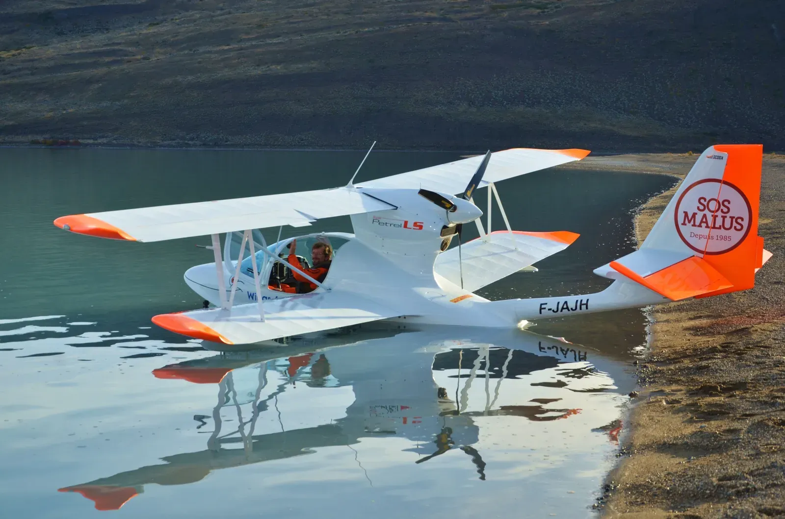
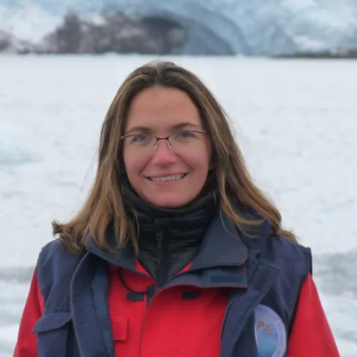
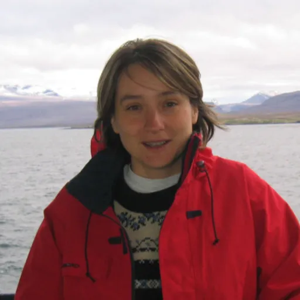

Notre réseau · 02 — L’équipe
L'équipe des expéditions 2008–2017
Notre équipe
Voici l'équipe qui a porté les expéditions de 2008 à 2017 : ses membres permanents, et tous les membres contributeurs qui nous ont assistés ponctuellement.
Comité scientifique
Comité scientifique

Membre du comité scientifique
Aurélie COLOMB
Chercheuse en Chimie Atmosphérique Globale et maître de conférence à l'Université Clermont Auvergne, elle est aussi enseignante-chercheuse au Laboratoire de Météorologie Physique (LaMP) et à l'Observatoire de Physique du Globe de Clermont-Ferrand (OPGC). C'est aussi une aventurière, associant toujours la science à ses expéditions.

Membre du comité scientifique
Valérie GROS
Directrice de recherche CNRS au Laboratoire des Sciences du Climat et de l'Environnement LSCE, elle est aussi responsable de l'équipe de chimie atmosphérique expérimentale. Elle fait partie de l'équipe depuis le début, aidant à façonner les programmes scientifiques de Wings for Science.
Équipe opérationnelle
Équipe opérationnelle

Météorologue
Ernest KIRPACH
Diplômé en météorologie, Ernest a travaillé pendant de nombreuses années à l'aéroport international de Luxembourg en tant que météorologue. C'est aussi un pilote privé et un enseignant en météorologie aéronautique.

Responsable réseaux sociaux
Katarzyna KOLODZIEJCZYK
Cette globetrotteuse vient de Pologne, a vécu aux États-Unis, puis a travaillé en Slovaquie, en Autriche et au Luxembourg. Fondatrice de Fail Learn Succeed Forum, elle sait construire et animer des communautés.

Responsable médicale
Rébecca ROTNEMER
Médecin aux multiples spécialités, Rébecca travaille en cabinet privé ainsi qu'aux urgences hospitalières. Elle est également élue au Conseil de l'Ordre. Elle suit les pilotes lors de chaque expédition.
Soutien logistique
Soutien logistique
Soutien logistique
La Guilde
Grande ONG basée à Paris, portant le statut d'utilité publique. Son expérience globale en collaboration locale est très utile pour nos objectifs.
Soutien logistique
Prepare 2 Go
Équipe internationale basée en Belgique, spécialisée dans la logistique en milieux extrêmes. Ils sont capables de sortir des personnes et du matériel de n'importe où !

Notre réseau · 03